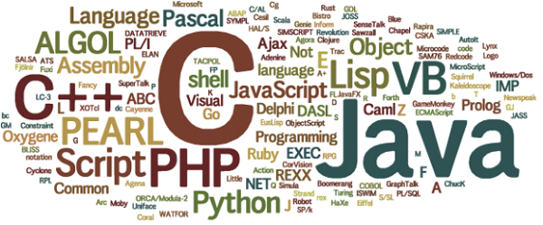

Lenguajes de programación
Imagen obtenida de https://blog.professorbeekums.com/2017/01/do-programming-languages-matter.html
¿Qué es un lenguaje de programación?
Un lenguaje de programación es un lenguaje diseñado para describir el conjunto de acciones consecutivas que un equipo debe ejecutar. Por lo tanto, un lenguaje de programación es un modo práctico para que los seres humanos puedan dar instrucciones a un equipo.
Clasificación de los lenguajes de programación de alto nivel
Los lenguajes de programación se pueden clasificar de varias maneras:
- Su propósito
- Su método de ejecución
- Su paradigma de programación
Clasificación según su proposito
- Lenguajes de propósito general: permiten la implementación de prácticamente cualquier algoritmo, el nivel de abstracción es más uniforme, proporciona razonable rendimiento.
- Lenguajes de propósito específico: tienen por lo general un conjunto muy restringido de características y un alto nivel de abstracción para cumplir tareas especificas como el procesamiento de textos, gráficos, audio, video e ingeniería.
Clasificación según su método de ejecución
- Lenguajes Compilados: traducen el código fuente del programa a código máquina o código objeto.
- Lenguajes Interpretados: ejecutan línea a línea las instrucciones de un programa. Requieren del código fuente para ejecutar el programa.
Clasificación según su Paradigma de Programación
- Lenguajes Imperativos: son abstracciones de alguna secuencia de instrucciones que especifican con detalle el orden de ejecución del programa.
- Lenguajes Declarativos: expresan lo que el programa debe lograr sin prescribir cómo hacerlo, en términos de secuencias de acciones que deben tomarse.
- Lenguajes Funcionales: constan de un conjunto de funciones pre-definidas.
- Lenguajes de Lógicos: expresan tareas utilizando la lógica formal matemática.
- Lenguajes Orientados a Objetos: crean un sistema de clases y objetos siguiendo el esquema del mundo real para definir los objetos, acciones y forma de comunican entre objetos.
Fuente: http://www.cavsi.com/preguntasrespuestas/cual-es-la-clasificacion-los-lenguajes-de-programacion/